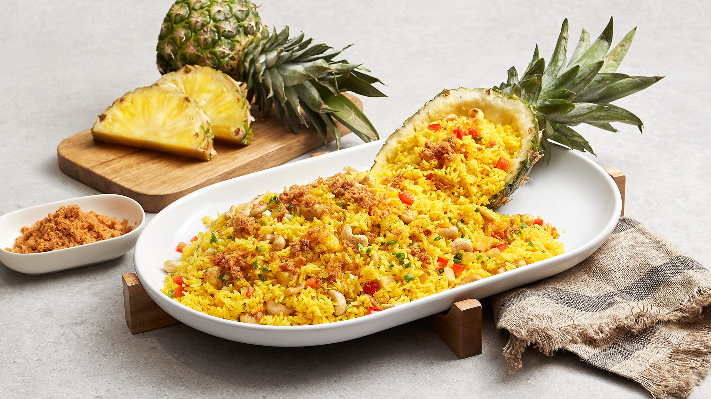

Island Time Pineapple Fried Rice

This is a delicious simple but very delcious recipe that transports you to a tropical island.
Ingrediants
- 2 ½ cups cooked Jasmine rice chilled
- 3 tbsp coconut oil
- 4 cloves garlic minced
- 2 cups pineapple cut in ½-inch cubes
- ½ tsp black pepper
- ½ cup unsalted roasted cashews
Directions
- Pour 2 gallons of water into pot and heat up like valcano, pur in rice and let cook for 20 minutes
- Chop 4 cloves of garlic and throw into pot
- Chop up 2 cups of pinnaple into little 1/2 cubes
- Pour rice out of pot and into hotter pan and fry rice
- mix in all other ingredients
- Stir occasionally for 10 minutes
- If rice becomes dry pour in splashes of water
- Salt to taste